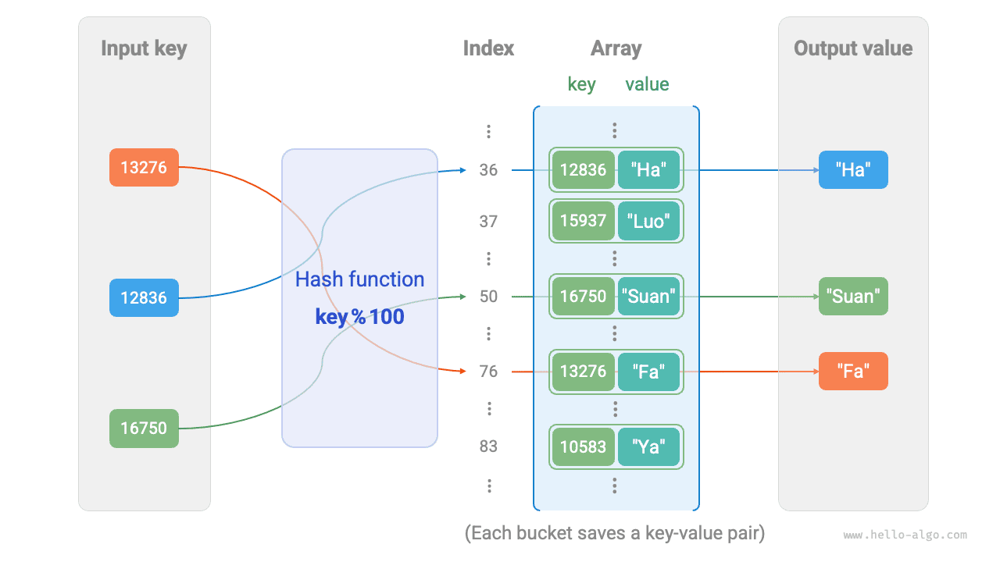
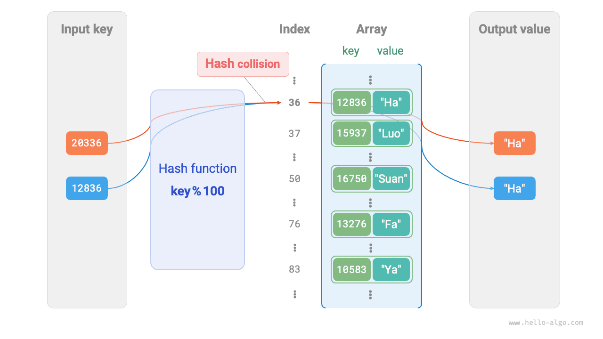
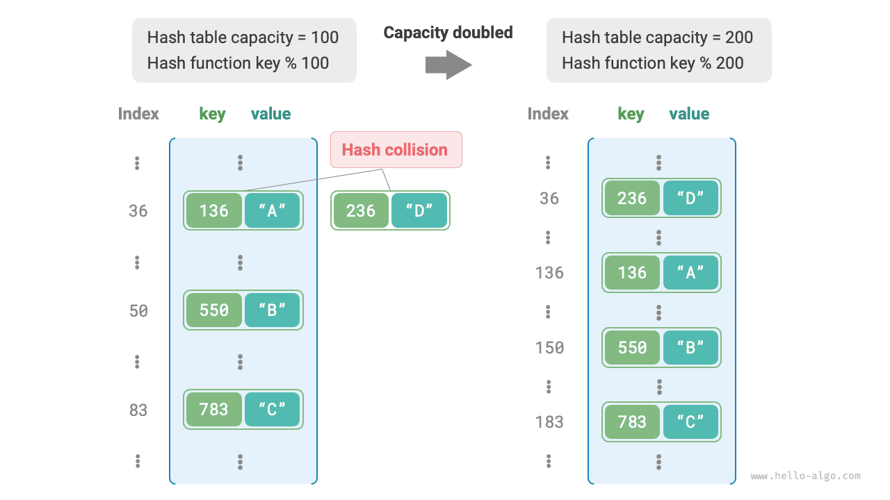

التجزئة
جدول التجزئة
جدول التجزئة (hash table)، المعروف أيضاً بـخريطة التجزئة (hash map)، يخزّن ارتباطات من المفاتيح key إلى القيم value، مما يتيح عمليات بحث فعّالة. وتحديداً، عند إعطاء مفتاح key، يمكننا استرجاع القيمة المقابلة value من جدول التجزئة في زمن $O(1)$.
وكما يوضح الشكل أدناه، لنفترض أن لدينا $n$ طالباً، ولكل طالب معلومتان: الاسم ورقم الهوية. وإذا أردنا دعم الاستعلام «أعطِ رقم الهوية وأعد الاسم المقابل»، فيمكننا استخدام جدول التجزئة الموضح أدناه.

إلى جانب جداول التجزئة، يمكن للمصفوفات والقوائم المترابطة أيضاً تنفيذ وظيفة الاستعلام. وتُعرض مقارنة كفاءتها في الجدول التالي.
- إضافة العناصر: ما عليك سوى إضافة العناصر إلى نهاية المصفوفة (القائمة المترابطة)، وهو ما يستغرق زمن $O(1)$.
- الاستعلام عن العناصر: بما أن المصفوفة (القائمة المترابطة) غير مرتبة، يلزم اجتياز جميع العناصر، وهو ما يستغرق زمن $O(n)$.
- حذف العناصر: يجب أولاً تحديد موقع العنصر، ثم حذفه من المصفوفة (القائمة المترابطة)، وهو ما يستغرق زمن $O(n)$.
جدول
| المصفوفة | القائمة المترابطة | جدول التجزئة | |
|---|---|---|---|
| العثور على عنصر | $O(n)$ | $O(n)$ | $O(1)$ |
| إضافة عنصر | $O(1)$ | $O(1)$ | $O(1)$ |
| حذف عنصر | $O(n)$ | $O(n)$ | $O(1)$ |
وكما نرى، فإن عمليات الإدراج والحذف والبحث والتحديث في جدول التجزئة جميعها بتعقيد زمني $O(1)$، مما يجعل جداول التجزئة عالية الكفاءة.
العمليات الشائعة على جدول التجزئة
تشمل العمليات الشائعة على جداول التجزئة: التهيئة، وعمليات الاستعلام، وإضافة أزواج المفتاح-القيمة، وحذف أزواج المفتاح-القيمة. وتظهر الشيفرة المثالية أدناه:
Go
/* تهيئة جدول التجزئة */
hmap := make(map[int]string)
/* عملية الإضافة */
// أضف زوج المفتاح-القيمة (key, value) إلى جدول التجزئة
hmap[12836] = "XiaoHa"
hmap[15937] = "XiaoLuo"
hmap[16750] = "XiaoSuan"
hmap[13276] = "XiaoFa"
hmap[10583] = "XiaoYa"
/* عملية الاستعلام */
// أدخل المفتاح إلى جدول التجزئة للحصول على القيمة
name := hmap[15937]
/* عملية الحذف */
// احذف زوج المفتاح-القيمة (key, value) من جدول التجزئة
delete(hmap, 10583)
TypeScript
/* تهيئة جدول التجزئة */
const map = new Map<number, string>();
/* عملية الإضافة */
// أضف زوج المفتاح-القيمة (key, value) إلى جدول التجزئة
map.set(12836, 'XiaoHa');
map.set(15937, 'XiaoLuo');
map.set(16750, 'XiaoSuan');
map.set(13276, 'XiaoFa');
map.set(10583, 'XiaoYa');
console.info('\nAfter adding, hash table is\nKey -> Value');
console.info(map);
/* عملية الاستعلام */
// أدخل المفتاح إلى جدول التجزئة للحصول على القيمة
let name = map.get(15937);
console.info('\nInput student ID 15937, queried name ' + name);
/* عملية الحذف */
// احذف زوج المفتاح-القيمة (key, value) من جدول التجزئة
map.delete(10583);
console.info('\nAfter deleting 10583, hash table is\nKey -> Value');
console.info(map);
هناك ثلاث طرق شائعة لاجتياز جدول التجزئة: اجتياز أزواج المفتاح-القيمة، واجتياز المفاتيح، واجتياز القيم. وتظهر الشيفرة المثالية أدناه:
Go
/* اجتياز جدول التجزئة */
// اجتَز أزواج المفتاح-القيمة key->value
for key, value := range hmap {
fmt.Println(key, "->", value)
}
// اجتَز المفاتيح فقط
for key := range hmap {
fmt.Println(key)
}
// اجتَز القيم فقط
for _, value := range hmap {
fmt.Println(value)
}
TypeScript
/* اجتياز جدول التجزئة */
console.info('\nTraverse key-value pairs Key->Value');
for (const [k, v] of map.entries()) {
console.info(k + ' -> ' + v);
}
console.info('\nTraverse keys only Key');
for (const k of map.keys()) {
console.info(k);
}
console.info('\nTraverse values only Value');
for (const v of map.values()) {
console.info(v);
}
تنفيذ بسيط لجدول التجزئة
لنبدأ بأبسط حالة: تنفيذ جدول تجزئة بمصفوفة فقط. في جدول التجزئة، تسمى كل خانة فارغة في المصفوفة دلواً (bucket)، ويمكن لكل دلو تخزين زوج مفتاح-قيمة واحد. لذا يتلخّص البحث في إيجاد الدلو الخاص بالمفتاح key وقراءة القيمة value المخزنة فيه.
فكيف نجد الدلو الصحيح لمفتاح key معطى؟ نفعل ذلك باستخدام دالة التجزئة (hash function). فدالة التجزئة تربط فضاء إدخال أكبر بفضاء إخراج أصغر. وفي جدول التجزئة، يكون فضاء الإدخال هو مجموعة جميع المفاتيح key، وفضاء الإخراج هو مجموعة جميع الدلاء (فهارس المصفوفة). بعبارة أخرى، عند إعطاء key، تخبرنا دالة التجزئة بمكان تخزين زوج المفتاح-القيمة المقابل في المصفوفة.
وبالنسبة إلى key معطى، يتضمن حساب فهرس الدلو الخطوتين التاليتين:
- استخدم خوارزمية تجزئة
hash()لحساب قيمة تجزئة. - خذ باقي قسمة قيمة التجزئة على عدد الدلاء (طول المصفوفة)
capacityللحصول على الدلو (فهرس المصفوفة)indexالمقابل للمفتاحkey.
index = hash(key) % capacity
وبعد ذلك يمكننا استخدام index للوصول إلى الدلو المقابل في جدول التجزئة واسترجاع القيمة value.
لنفترض أن طول المصفوفة هو capacity = 100 وأن خوارزمية التجزئة هي hash(key) = key. فحينئذٍ تكون دالة التجزئة هي key % 100. ويوضح الشكل أدناه كيفية عمل دالة التجزئة هذه، باستخدام رقم الهوية مفتاحاً key والاسم قيمةً value.

تنفّذ الشيفرة التالية جدول تجزئة بسيطاً. وهنا نغلّف key وvalue في فئة Pair لتمثيل زوج مفتاح-قيمة.
TypeScript
/* جدول تجزئة بتنفيذ قائم على مصفوفة */
class ArrayHashMap {
private readonly buckets: (Pair | null)[];
constructor() {
// هيّئ مصفوفة بـ 100 دلو
this.buckets = new Array(100).fill(null);
}
/* دالة التجزئة */
private hashFunc(key: number): number {
return key % 100;
}
/* عملية الاستعلام */
public get(key: number): string | null {
let index = this.hashFunc(key);
let pair = this.buckets[index];
if (pair === null) return null;
return pair.val;
}
/* عملية الإضافة */
public set(key: number, val: string) {
let index = this.hashFunc(key);
this.buckets[index] = new Pair(key, val);
}
/* عملية الحذف */
public delete(key: number) {
let index = this.hashFunc(key);
// اضبط على null لتمثيل الحذف
this.buckets[index] = null;
}
/* احصل على جميع أزواج المفتاح-القيمة */
public entries(): (Pair | null)[] {
let arr: (Pair | null)[] = [];
for (let i = 0; i < this.buckets.length; i++) {
if (this.buckets[i]) {
arr.push(this.buckets[i]);
}
}
return arr;
}
/* احصل على جميع المفاتيح */
public keys(): (number | undefined)[] {
let arr: (number | undefined)[] = [];
for (let i = 0; i < this.buckets.length; i++) {
if (this.buckets[i]) {
arr.push(this.buckets[i].key);
}
}
return arr;
}
/* احصل على جميع القيم */
public values(): (string | undefined)[] {
let arr: (string | undefined)[] = [];
for (let i = 0; i < this.buckets.length; i++) {
if (this.buckets[i]) {
arr.push(this.buckets[i].val);
}
}
return arr;
}
/* اطبع جدول التجزئة */
public print() {
let pairSet = this.entries();
for (const pair of pairSet) {
console.info(`${pair.key} -> ${pair.val}`);
}
}
}
تصادم التجزئة وإعادة التحجيم
في جوهر الأمر، تربط دالة التجزئة فضاء الإدخال المكوّن من جميع المفاتيح key بفضاء الإخراج المكوّن من جميع فهارس المصفوفة، وغالباً ما يكون فضاء الإدخال أكبر بكثير من فضاء الإخراج. لذلك يجب نظرياً أن تُسند مدخلات مختلفة أحياناً إلى الإخراج نفسه.
وبالنسبة إلى دالة التجزئة في المثال أعلاه، عندما يكون للمفاتيح key المدخلة الرقمان الأخيران نفسهما، تنتج دالة التجزئة الإخراج نفسه. على سبيل المثال، عند الاستعلام عن طالبين برقمي هوية 12836 و20336، نحصل على:
12836 % 100 = 36
20336 % 100 = 36
وكما يوضح الشكل أدناه، يشير رقما هوية الآن إلى الاسم نفسه، وهو ما لا يصح قطعاً. ونسمي هذه الحالة، التي تُسند فيها مدخلات متعددة إلى الإخراج نفسه، تصادم تجزئة (hash collision).

من السهل أن نرى أنه كلما زادت سعة جدول التجزئة $n$، قلّ احتمال إسناد مفاتيح key متعددة إلى الدلو نفسه، وقلّت التصادمات. لذلك يمكننا تقليل تصادمات التجزئة بتوسيع جدول التجزئة.
وكما يوضح الشكل أدناه، قبل التوسيع تصادم الزوجان (136, A) و(236, D)، أما بعد التوسيع فيزول التصادم.

ومثل إعادة تحجيم مصفوفة، تتطلب إعادة تحجيم جدول التجزئة ترحيل جميع أزواج المفتاح-القيمة من الجدول الأصلي إلى الجدول الجديد، وهو أمر مكلف. وإضافة إلى ذلك، ولأن سعة جدول التجزئة capacity تتغير، يجب علينا إعادة حساب موضع تخزين كل زوج مفتاح-قيمة باستخدام دالة التجزئة، وهو ما يزيد تكلفة إعادة التحجيم أكثر. ولهذا السبب، تحجز لغات البرمجة عادةً سعة كافية لجدول التجزئة لتجنّب إعادة التحجيم المتكررة.
عامل الحِمل (load factor) مفهوم مهم في جداول التجزئة. ويُعرَّف بأنه عدد العناصر في جدول التجزئة مقسوماً على عدد الدلاء، ويُستخدم لقياس شدة تصادمات التجزئة. ويُستخدم أيضاً عادةً عتبةً لتفعيل إعادة تحجيم جدول التجزئة. على سبيل المثال، في Java، عندما يتجاوز عامل الحِمل $0.75$، يوسّع النظام جدول التجزئة إلى ضعف حجمه الأصلي.